Find rockhounding hotspots along Texas highways
Rockhound Scout checks published geologic map data along state and U.S. highways, finds the stretches where one rock formation meets another, and writes you a field guide entry for each one: where to look, what to watch for from the truck, and what you might find.
How it works
- Pick a region or type your own area. Choose a preset Texas region, or use Custom to type a town, hotel, address, or a plain sentence like “agatized petrified wood near Bryan, TX.”
- The app reads the map. It finds nearby state and U.S. highways, samples the geologic map along each road, and marks the places where the rock formation changes. Those contacts are where minerals, fossils, and petrified wood often concentrate.
- You get hotspot cards. Each card gives the formations on either side of the contact, named creeks nearby, driving directions from a nearby town, what to look for from the truck window, likely finds, and a Waze search term.
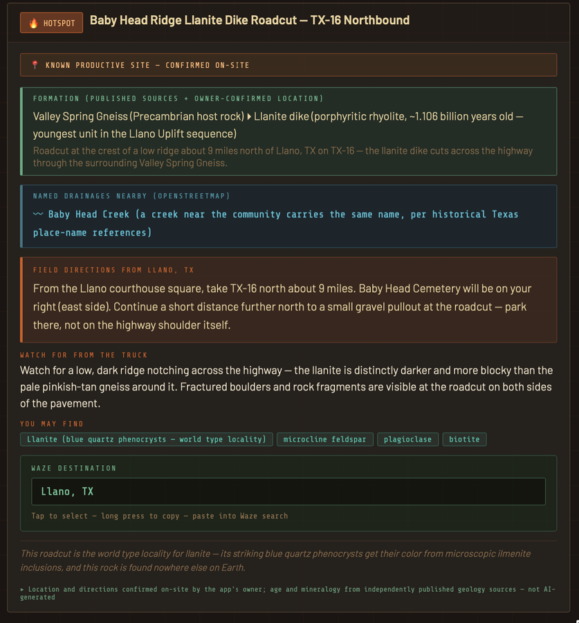
A real hotspot card from the app: the Baby Head Ridge Llanite Dike Roadcut, one of the only sources of llanite on Earth.
What’s in it
Preset regions
Llano Uplift, Three Rivers, Edwards Plateau, Big Bend, and the Cretaceous Shelf.
Custom search
Any spot in Texas. Type a town, address, or what you’re hunting. Included at no extra charge.
Map-based locations
Formation contacts come from published geologic map data, not from AI guesses.
Plain-English write-ups
AI is used only to write the descriptions of what the map data found.
Real finds
No stock photos here. These are the owner’s own hauls, pulled straight out of the ground by chasing these exact hotspot cards across the Llano Uplift and the Texas Hill Country.
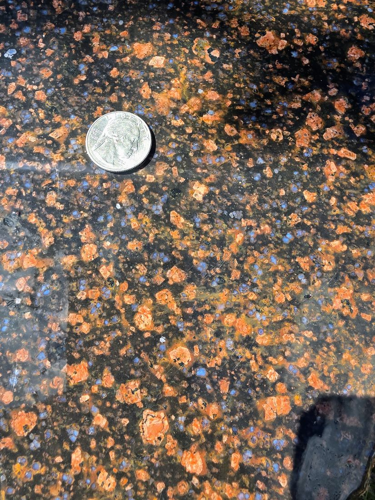
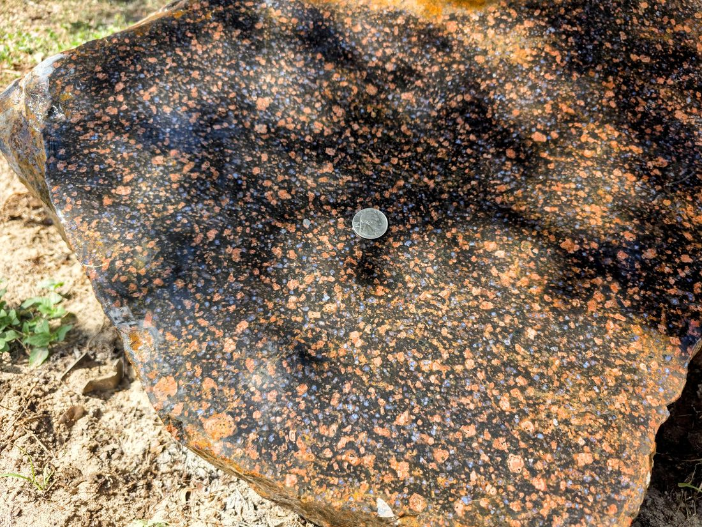
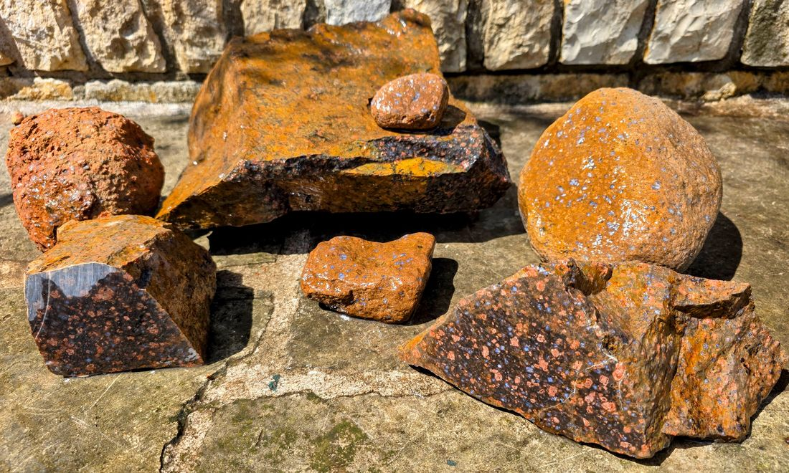
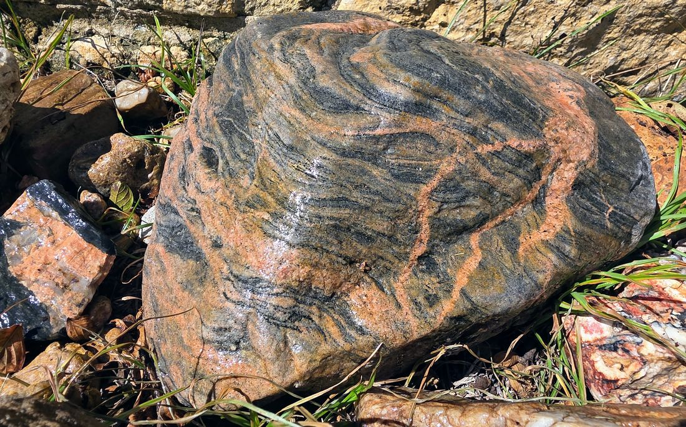
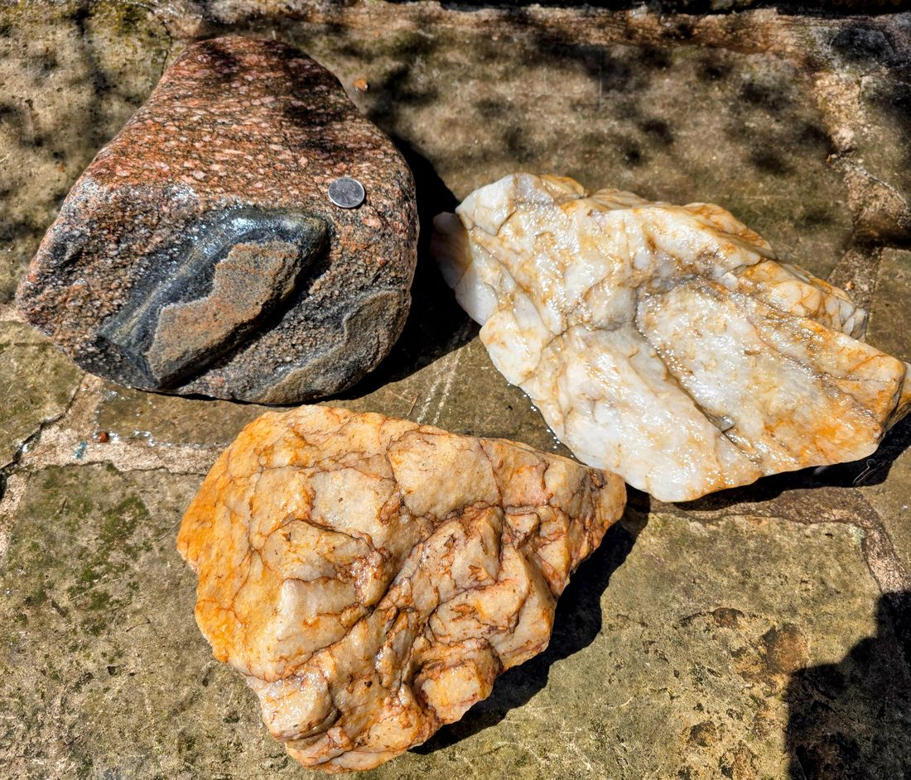
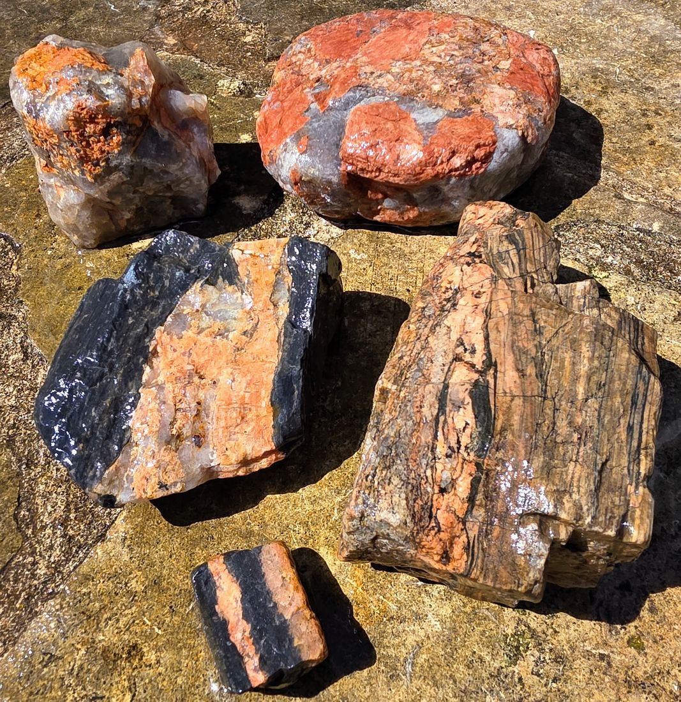
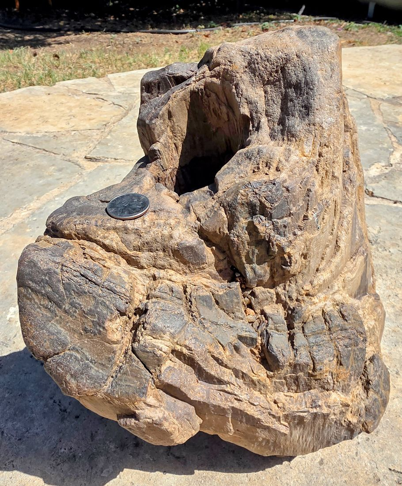
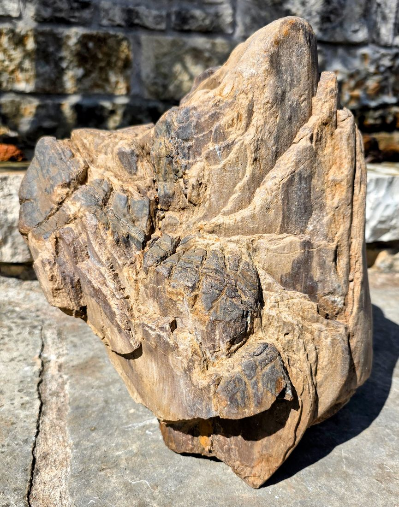
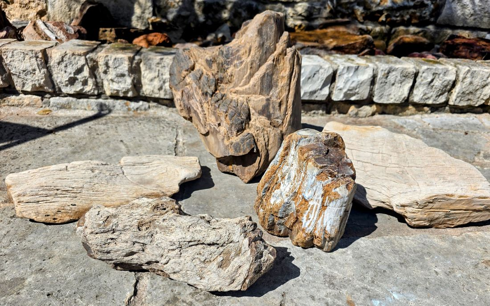
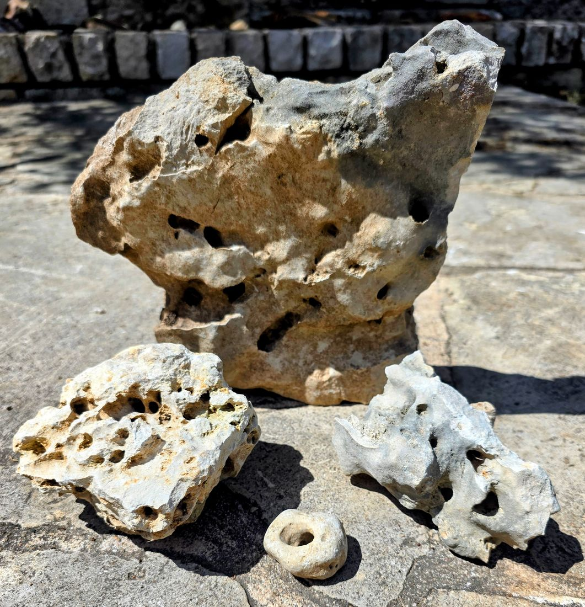
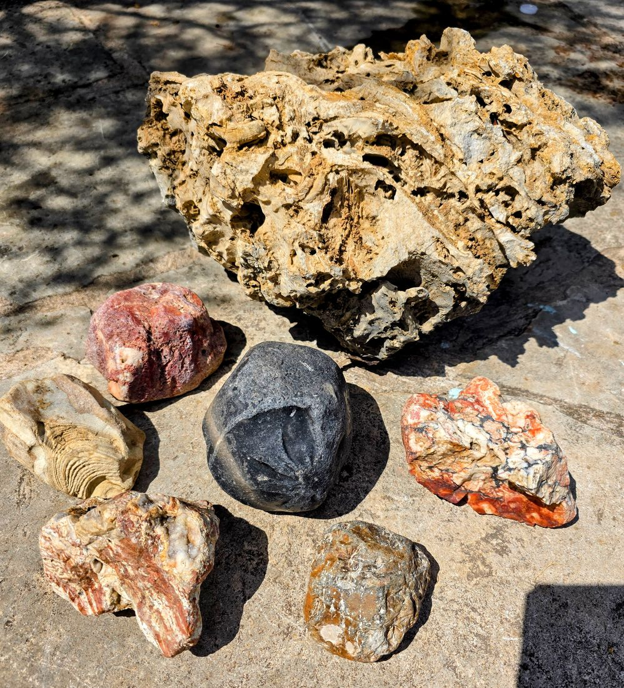
Pricing
- 200 scans, preset regions or Custom
- Custom area search included
- Scans never expire
- No subscription and no recurring charges
One “scan” is one tap of Find My Hotspots. A scan that ends in an error, or that finds no hotspots, isn’t deducted. See the Refund & Dispute Policy.
Straight talk about what this is
This is a research tool, not a guarantee. Geologic maps can’t show every small vein or outcrop, so a marked stretch is a starting point: check both sides of the road nearby. Most Texas land is privately owned, so always get the landowner’s permission before collecting, never park on a highway shoulder, and follow all traffic and land-use laws. Please read the Terms of Service.
Questions
Is this a subscription?
No. It’s a one-time $25 purchase for 200 scans. Nothing renews and there’s nothing to cancel.
Do scans expire?
No. Use them whenever you like.
What counts as a scan?
One tap of Find My Hotspots, for a preset region or a Custom search. If the scan ends in an error or returns no hotspots, it isn’t deducted.
Can I get a refund?
We don’t refund unused scans or change-of-mind purchases. If we charge you by mistake, a scan is wrongly deducted, or the app is broken for an extended period, we’ll make it right. Details are in the Refund & Dispute Policy.
Does it cover places outside Texas?
No. Rockhound Scout currently works only for Texas.
Where does the data come from?
Rock formation data comes from Macrostrat, a public database that compiles published geologic maps. Roads and creek names come from OpenStreetMap. AI is used only to write the descriptions.
How do I contact you?
Email StructureGuyPhD@gmail.com.